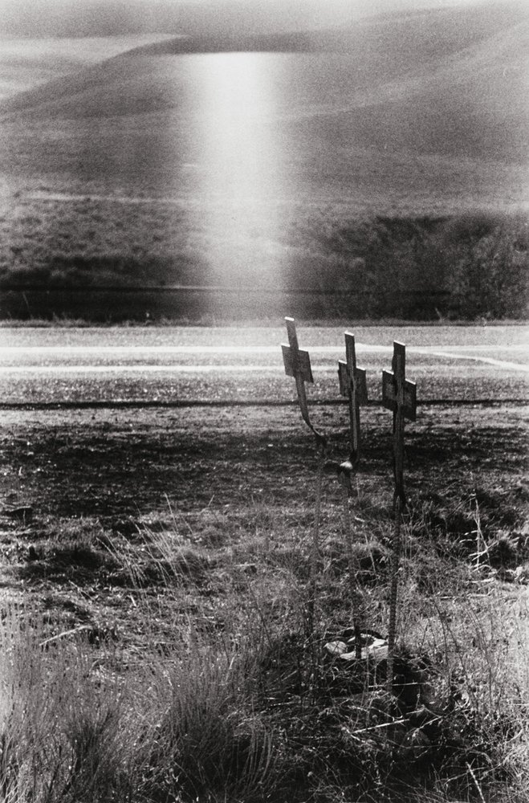

Crosses on Scene of Highway Accident, U.S. 91, Idaho
Robert Frank · 1955 · Gelatin silver print · 32.4 × 21.3 cm · Art Institute of Chicago
In copyright. Look and learn: shown for study, not for download.
Frank made this on U.S. 91 in Idaho in 1955, during the road trips for The Americans; for part of the way he brought his family along. In Arkansas the police stopped him, accused him of being a communist and held him in jail for three days. When the book came out in the United States in 1959, critics attacked its tone and the blur and grain of a hand-held camera, and sales were poor at first. On the back of the mount of this print is the number 13, circled in pencil.